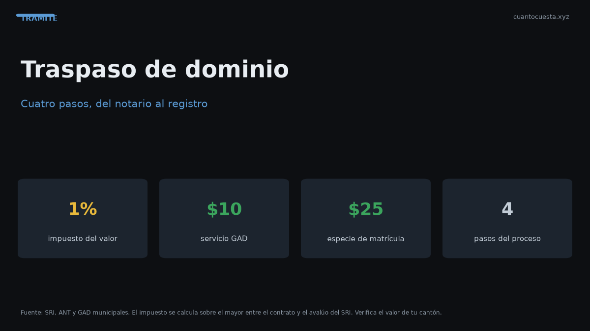

Cómo hacer el traspaso de dominio de un vehículo en Ecuador (paso a paso)
Traspaso de dominio en Ecuador paso a paso: los 4 pasos ante notaría y ANT, el impuesto del 1% sobre el mayor valor, costos totales y requisitos 2026.

El traspaso de dominio en Ecuador cuesta, como mínimo, el 1% del mayor valor entre el precio del contrato y el avalúo del SRI, más notaría y tasas. En un auto de $12.000, ese impuesto son $120. El proceso tiene 4 pasos y se completa entre la notaría, una entidad financiera autorizada y la ANT o el GAD.
Esta guía detalla cada paso, cómo se calcula el 1% y los errores que más retrasan el trámite.
Los 4 pasos del traspaso
- Reconocimiento de firmas del contrato de compraventa ante notario. Vendedor y comprador firman; el notario legaliza el documento.
- Pago del impuesto del 1% en una institución financiera autorizada. Se calcula sobre el mayor valor entre contrato y avalúo.
- Solicitud de registro del cambio de propietario en la ANT o en el GAD correspondiente, con todos los requisitos.
- Emisión de la nueva especie de matrícula a nombre del nuevo propietario.
El paso que más gente omite es el 2: sin el pago del 1% registrado, no se procesa el cambio de propietario. No sirve de nada firmar en notaría si no pagas el impuesto.
Cómo se calcula el impuesto del 1%
La regla es simple, pero tiene una trampa:
- Se toma el precio del contrato de compraventa.
- Se toma el avalúo del SRI del vehículo.
- Se paga el 1% sobre el MAYOR de los dos.
La trampa: si compras barato y el avalúo del SRI es más alto, pagas sobre el avalúo. El impuesto no baja solo porque negociaste un buen precio.
| Precio de contrato | Avalúo SRI | Base del 1% | Impuesto a pagar |
|---|---|---|---|
| $12.000 | $10.500 | $12.000 | $120,00 |
| $12.000 | $14.000 | $14.000 | $140,00 |
En el primer caso manda el contrato; en el segundo, el avalúo.
Costos totales con ejemplo numérico
Para un auto de $12.000 con avalúo de $10.500:
| Concepto | Costo referencial |
|---|---|
| Impuesto del 1% | $120,00 |
| Nueva especie de matrícula | $25,00 |
| Transferencia de dominio (servicio) | $10,00 |
| Honorarios de notaría | Variable |
| Trámite ANT/GAD | Variable |
| Tasa de mantenimiento vial (si aplica) | Variable |
El impuesto y las tasas fijas son predecibles; la notaría y el servicio de trámite varían por ciudad y por notaría. Pide el valor antes de firmar.
Requisitos completos
Antes de ir a la notaría o a la ANT, reúne:
- Cédula del vendedor y cédula del comprador.
- Certificado de votación de ambos.
- Formulario de solicitud de transferencia de dominio.
- Documento soporte de propiedad: matrícula vigente o Certificado Único Vehicular (CUV).
- Contrato de compraventa legalizado ante notario.
- Certificado de improntas del vehículo.
- No tener infracciones de tránsito pendientes.
El certificado de improntas y la revisión de infracciones pendientes son los dos requisitos que más bloquean traspasos. Si el vendedor tiene multas sin pagar, el trámite no avanza hasta que las salde.
Errores comunes
- Firmar sin verificar infracciones. Si el auto tiene multas pendientes, el traspaso se detiene.
- Declarar un precio menor al avalúo esperando pagar menos. El impuesto se calcula sobre el mayor valor: no funciona.
- No llevar el CUV o la matrícula vigente. Sin documento soporte de propiedad no hay trámite.
- Olvidar el certificado de votación de alguno de los dos.
- Pagar la notaría y no el impuesto del 1%. Son dos obligaciones distintas.
- Confundir traspaso con matrícula. El traspaso cambia de dueño; la matrícula anual es otra obligación.
Cómo se reparte el trámite entre tres entidades
El traspaso no se resuelve en una sola oficina. Cada paso ocurre en un lugar distinto:
| Etapa | Entidad | Qué se hace |
|---|---|---|
| 1 | Notaría | Reconocimiento de firmas del contrato |
| 2 | Institución financiera autorizada | Pago del impuesto del 1% |
| 3 | ANT o GAD | Solicitud de cambio de propietario |
| 4 | ANT o GAD | Emisión de la nueva especie de matrícula |
Por eso conviene planificar media jornada o más: no basta con ir a una sola ventanilla.
Preguntas frecuentes
¿Cuánto cuesta traspasar un auto de $12.000? El impuesto es $120, más $25 de nueva especie de matrícula y $10 del servicio de transferencia. Notaría y trámite varían.
¿Se puede traspasar con infracciones pendientes? No. El trámite no avanza hasta que el vendedor las salde.
¿El impuesto se paga en la notaría? No: se paga en una institución financiera autorizada.
¿Qué pasa si el avalúo del SRI es mayor que el contrato? Pagas el 1% sobre el avalúo.
¿Qué sirve como documento de propiedad? La matrícula vigente o el CUV.
Qué mirar antes de firmar el contrato
El contrato fija el precio, y sobre ese precio —o sobre el avalúo, si es mayor— se calcula el 1%. Antes de firmar:
- Consulta el avalúo del SRI por placa.
- Compara el avalúo con el precio que vas a declarar.
- Pide al vendedor el certificado de improntas y confirma que no tenga infracciones.
- Reúne las cédulas y certificados de votación de ambos.
- Pide en la notaría el costo de honorarios antes de comprometerte.
Si el avalúo supera el precio de tu contrato, el impuesto sube: mejor saberlo antes de firmar que después.
Resumen práctico
- El traspaso se compone de 4 pasos: notaría, pago del 1%, registro en ANT/GAD y nueva especie de matrícula.
- El impuesto es 1% sobre el mayor entre contrato y avalúo del SRI.
- Un auto de $12.000 paga $120 de impuesto, más $25 de nueva matrícula y $10 de servicio.
- Necesitas cédulas, certificados de votación, contrato legalizado, improntas y cero infracciones pendientes.
- Los valores son referenciales y varían por ciudad y notaría; confirma tasas en la ANT o tu GAD antes de iniciar.
Sigue leyendo
Calendario de matriculación en Ecuador: qué mes te toca según tu placa
La matrícula se paga según el último dígito de tu placa. Revisa qué mes te corresponde, la mult
Cambio de características del vehículo en Ecuador: color, motor y carrocería
Cambiar el color, el motor o la carrocería de tu auto exige declararlo en la ANT: cuándo es obl
Certificado Único Vehicular (CUV) en Ecuador: qué es y cómo obtenerlo
El Certificado Único Vehicular (CUV) cuesta $7,50 en Ecuador. Qué información contiene, cuándo
Duplicado de matrícula y placas en Ecuador: qué hacer si las pierdes
Perdiste o te robaron las placas: pasos, denuncia, requisitos, costos ($23 placas, $25 especie,
Impuesto del 1% por compraventa de vehículos usados en Ecuador
El impuesto por compraventa de vehículos usados en Ecuador es el 1% sobre el mayor valor entre
Cómo usamos estos datos
Las cifras de esta guía provienen de fuentes públicas oficiales y tarifarios de concesionarios publicados. Los valores son referenciales: tasas municipales, promociones y precios de repuestos varían. Verifica siempre en la entidad o concesionario antes de decidir.